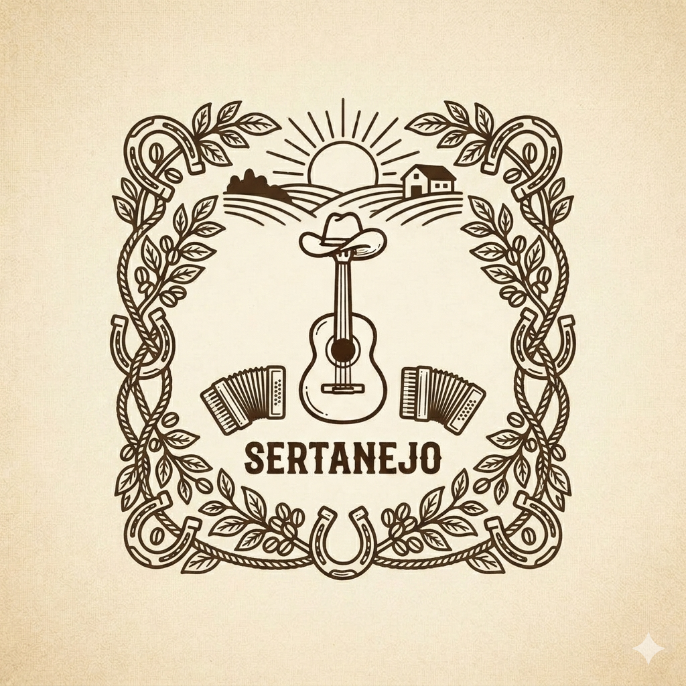

viver sertannejo
por: Rafaella Rota Neris
Sejam bem vindos!. Aqui vou compartilhar a historia e curiosidades do sertanejo d
Como nasceu a música sertaneja
A música sertaneja nasceu no início do século XX nas áreas rurais do interior do Brasil, especialmente em estados como São Paulo, Minas Gerais e Goiás, a partir das tradicionais rodas de viola e modas caipiras. O grande marco de nascimento e comercialização do gênero ocorreu em 1929, quando o folclorista Cornélio Pires gravou os primeiros discos comerciais com canções e causos do interior paulista.
Origens e Evolução
As Raízes Coloniais: A viola caipira chegou ao Brasil com os colonizadores portugueses e jesuítas, que a utilizavam para catequizar e celebrar festas religiosas. Com o tempo, as populações rurais adaptaram o instrumento para cantar a lida no campo, a fé e a saudade. [5, 6] * As Rodas de Viola: Nos anos 1910 e 1920, as pessoas se reuniam no campo para comer, beber e contar histórias embaladas pelo som da viola. * O Marco de 1929: [Cornélio Pires] organizou turmas de artistas caipiras e conseguiu gravar discos de 78 rotações em São Paulo, tirando a música do anonimato rural e levando-a para as cidades. * A Era de Ouro das Duplas: A partir das décadas de 1940 e 1950, duplas como Tonico e Tinoco ganharam o rádio nacional, consolidando o som de vozes em terça paralela e a viola marcante. * A Modernização: O gênero evoluiu com a introdução de novos instrumentos (como a sanfona e o trompete) e passou por fases como o sertanejo romântico e o universitário.

">O Universo Sertanejo: História e Grandes Artistas
Os maiores nomes da música sertaneja são divididos por gerações, já que o gênero se transformou profundamente ao longo das décadas.Os maiores e mais influentes cantores da história da música sertaneja estão agrupados pelas fases que definiram o estilo:Sertanejo Raiz e Tradicional (As Origens)Tonico & Tinoco: Considerados a "Dupla Coração do Brasil", foram os maiores divulgadores da música caipira no rádio e na televisão, vendendo dezenas de milhões de discos.Tião Carreiro & Pardinho: Tião Carreiro foi o criador do "pagode de viola" e é o maior ícone dos ponteios de viola caipira.Milionário & José Rico: Revolucionaram o gênero ao introduzir influências da música mexicana (como trompetes) e ficaram conhecidos como "As Gargantas de Ouro do Brasil".Inezita Barroso: Uma das maiores vozes femininas e pesquisadora cultural, dedicou a vida a preservar a música de raiz.Sertanejo Romântico (Anos 80 e 90)Chitãozinho & Xororó: Foram os responsáveis por modernizar o sertanejo, introduzindo a guitarra elétrica e levando o gênero das rádios AM para as grandes arenas e canais de TV.Zezé Di Camargo & Luciano: Uma das duplas mais românticas e comerciais do país, arrastando multidões com composições focadas no amor e na dor de cotovelo.Leandro & Leonardo: Marcaram a década de 1990 com grandes sucessos populares que misturavam o sertanejo com o pop.Sertanejo Romântico (Anos 80 e 90)Chitãozinho & Xororó: Foram os responsáveis por modernizar o sertanejo, introduzindo a guitarra elétrica e levando o gênero das rádios AM para as grandes arenas e canais de TV.Zezé Di Camargo & Luciano: Uma das duplas mais românticas e comerciais do país, arrastando multidões com composições focadas no amor e na dor de cotovelo.Leandro & Leonardo: Marcaram a década de 1990 com grandes sucessos populares que misturavam o sertanejo com o pop.Sertanejo Romântico (Anos 80 e 90)Chitãozinho & Xororó: Foram os responsáveis por modernizar o sertanejo, introduzindo a guitarra elétrica e levando o gênero das rádios AM para as grandes arenas e canais de TV.Zezé Di Camargo & Luciano: Uma das duplas mais românticas e comerciais do país, arrastando multidões com composições focadas no amor e na dor de cotovelo.Leandro & Leonardo: Marcaram a década de 1990 com grandes sucessos populares que misturavam o sertanejo com o pop.Sertanejo Universitário e Moderno (Anos 2000 em diante)Marília Mendonça: A "Rainha da Sofrência" revolucionou o mercado ao liderar o movimento "Feminejo", tornando-se uma das maiores compositoras e artistas mais ouvidas da história da música brasileira.Gusttavo Lima: Um dos maiores fenômenos de público e pioneiro no formato dos mega-shows "Buteco", consolidando o sertanejo moderno com influências do bachata.Jorge & Mateus: A dupla mais importante da transição para o sertanejo universitário, mantendo o topo das paradas por quase duas décadas.Luan Santana: Fenômeno pop-sertanejo que modernizou os palcos e a produção musical do gênero voltada ao público jovem.